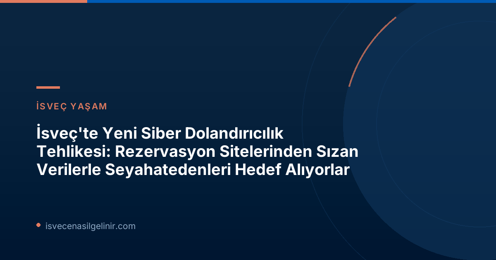

İsveç'te Artan Siber Dolandırıcılık Tehdidi: Detaylar ve Uyarılar
İsveç Ulusal Operasyonel Departmanı (Noa) Kriminal Komiseri Jan Olsson, son bir ay içinde rezervasyon sitelerinden sızdırılan verilerin kullanıldığı dolandırıcılık vakalarında önemli bir artış olduğunu belirtiyor. Dolandırıcılar, seyahat edenlerin güvenini kazanmak için sızdırılan rezervasyon bilgilerini (seyahat tarihleri, ödeme yöntemleri gibi) kullanarak WhatsApp üzerinden iletişime geçiyor ve kendilerini rezervasyon sitesi gibi tanıtıyorlar.
Dolandırıcıların Yeni Yöntemi
- Sızdırılan Verilerle Güven Sağlama: Dolandırıcılar, rezervasyon sitelerinden elde ettikleri ad, soyadı, seyahat tarihi, otel adı gibi kişisel bilgileri kullanarak mağdurla iletişime geçiyor. Bu sayede mesajlarının "resmi" görünmesini sağlıyorlar.
- WhatsApp Üzerinden İletişim: Tercih edilen iletişim kanalı genellikle WhatsApp. Bu platform, göndericinin kimliğini doğrulamayı zorlaştırdığı için dolandırıcılar için cazip bir seçenek sunuyor.
- Aciliyet ve Doğrulama Talepleri: Mağdurlara, otel rezervasyonlarında "bir sorun çıktığı" veya "doğrulama gerektiği" söyleniyor. Örneğin, 2-3 ay sonraki otel rezervasyonlarının onaylanması için banka kartı bilgilerinin girilmesi talep ediliyor.
- Çift Ödeme veya Kimlik Avı: Bu yöntemle ya banka kartı bilgileri ele geçiriliyor ya da aynı seyahatin bir kez daha ödenmesi isteniyor.
Kendinizi Nasıl Korursunuz? Üç Önemli Uyarı Sinyali
Jan Olsson, dolandırıcılık girişimlerini fark etmek için dikkat edilmesi gereken üç ana uyarı işaretini vurguluyor:
| Uyarı Sinyali | Açıklama |
|---|---|
| Hassas Bilgi Talebi | Bir şirketin sizden (özellikle banka bilgileri gibi) hassas kişisel verileri istemesi durumunda her zaman şüphe duyun. Gerçek şirketler genellikle bu tür bilgileri güvenli web siteleri üzerinden veya telefonla, sizin tarafınızdan başlatılan bir görüşme sonrasında talep eder. |
| Aciliyet Vurgusu | Dolandırıcılar genellikle aciliyet hissi yaratmaya çalışır ("hemen yapmalısınız", "son gün"). Sakin olun ve düşünmek için kendinize zaman tanıyın. |
| İletişim Kanalı Değişikliği | Bir şirketin resmi kanalları (e-posta, resmi web sitesi) yerine, WhatsApp veya Telegram gibi kapalı forumlara yönlendirme yapması önemli bir alarm işaretidir. |
Sağlıklı Bir Şüphecilik Geliştirin
Olsson'a göre, dolandırıcılıklardan korunmanın en etkili yolu "sağlıklı bir şüphecilik" geliştirmektir. Bir mesaj veya talep aldığınızda bir adım geri çekilin ve kendinize şu soruları sorun:
- Bu garip geliyor mu?
- Gerçek olamayacak kadar iyi mi?
- Bu bilgileri neden istiyorlar?
Bu gibi durumlarda, iletişim kurduğunuzdan emin olmak için daima seyahat acentenizin veya havayolunuzun resmi web sitesini ziyaret ederek kendi rezervasyonunuzu kontrol edin, asla size gönderilen bağlantılara tıklamayın veya arama yapmayın.
Eğer Dolandırıcılık Mağduru Olursanız
Maalesef, dolandırıcılık mağduru olmak herkesin başına gelebilir. Eğer böyle bir durumla karşılaşırsanız:
- Hemen Polisle İletişime Geçin: Durumu gecikmeden İsveç Polisi'ne bildirin. Dolandırıcılık raporunuz, diğer vakaların önlenmesine yardımcı olabilir.
- Bankanızla İletişim Kurun: Banka veya kredi kartı bilgileriniz ele geçirildiyse, hemen bankanızı arayarak kartlarınızı iptal ettirin ve yetkisiz işlemleri bildirin.
Jan Olsson, kendi bilgilerini veren mağdurların paralarını geri almasının her zaman mümkün olmadığını da belirtiyor. Bu nedenle önleyici tedbirler hayati önem taşımaktadır. Unutmayın ki, İsveç Vatandaşlık Sınavı gibi yasal süreçlerde de bilgilerinizi yalnızca resmi kanallardan edinmeniz ve kimlik bilgilerinizi güvenli bir şekilde paylaşmanız kritik öneme sahiptir.
Veri Güvenliği ve Şirketlerin Sorumluluğu
Olsson, rezervasyon siteleri gibi şirketlerin müşteri verilerini koruma ve bir ihlal meydana geldiğinde müşterilerini uyarma sorumluluğu olduğunu vurguluyor. Ancak, hiçbir şirketin %100 güvenlik sağlayamayacağının da altını çiziyor. Bu durum, bireysel kullanıcıların da kendi verileri konusunda dikkatli olması gerektiğini bir kez daha gösteriyor.
Siber Tehditlere Karşı Daima Bilinçli Olun
Siber dolandırıcılar, her zaman yeni yöntemler geliştirerek mağdur arayışında olacaklardır. Bu nedenle, internet üzerindeki etkileşimlerinizde her zaman bilinçli ve şüpheci olmak, kişisel ve finansal güvenliğinizi korumak için en önemli adımdır. Güncel gelişmeleri takip etmek ve güvenlik önlemlerini sürekli güncel tutmak, bu tür tehditlere karşı en iyi savunmadır.
Referanslar:
- SVT Nyheter Inrikes: "Nya bluffen: Bedragare använder läckta uppgifter från resesajter"
İsveç'te Siber Güvenliğiniz İçin Adım Atın
İsveç'te güvenli bir dijital yaşam sürdürmek, dolandırıcılıklara karşı uyanık olmakla başlar. Bu rehberdeki bilgileri uygulayarak kendinizi ve sevdiklerinizi koruyun. Unutmayın, bilgi en büyük kalkanınızdır!